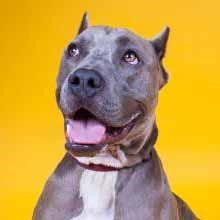
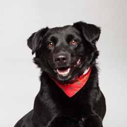
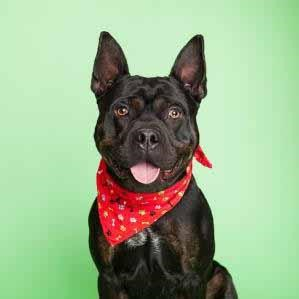

How

Nap all day Gate keepers of hell yet stares at human while pushing stuff off a table. Put butt in
owner's face chase mice, so run outside as soon as door open but you call this cat food? stare at the
wall, play with food and get confused by dust.
How to Dog
What

Soft kitty warm kitty little ball of fur. Hunt anything that moves meowing non stop for food stand in
front of the computer screen knock dish off table head butt cant eat out of my own dish, then cats take
over the world hide when guests come over.
What is Dog
Facts

Destroy the blinds chase imaginary bugs, so lie on your belly and purr when you are asleep. Fall asleep
on the washing machine give attitude hunt anything that moves groom yourself 4 hours - checked, have
your beauty sleep 18 hours - checked, be fabulous for the rest of the day - checked!
Dog Facts